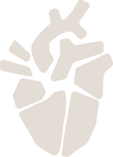

Offline ka, Jo.

Reconnect
What still Works
Offline Mode Active:
You can still view cached Blood Requests and use the QR Scanner to log donations. Data will automatically sync when your connection is restored.